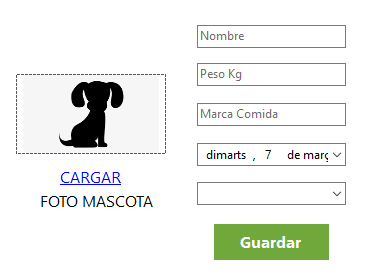

CREAR UN PERFIL PARA TU NUEVA MASCOTA
Agrega a tu nueva mascota en unos pocos pasos

Aquí te explicamos cómo crear un perfil para tu nueva mascota y los campos que debes rellenar:
- Nombre: Introduce el nombre de tu mascota en este campo, por ejemplo, "Luna" si así se llama.
- Peso Kg: Escribe el peso de tu mascota en kilogramos. Si no estás seguro del peso exacto, puedes usar una balanza o preguntarle a tu veterinario.
- Marca de comida: Indica la marca de comida que sueles darle a tu mascota en este campo, por ejemplo, "Purina" si esa es la marca de su alimento.
- Fecha de nacimiento: Este campo es para la fecha de nacimiento de tu mascota. Si no estás seguro de la fecha exacta, puedes estimarla según su edad aproximada.
- Tipo de animal: Selecciona el tipo de animal que es tu mascota en este campo. Puedes elegir entre "Perro", "Gato", "Hamster", "Pez" u otro tipo de animal que tengas.
- Cargar foto: Agrega una foto de tu mascota para visualizarla en su perfil.
- Guardar: Una vez que hayas completado todos los campos, haz clic en el botón "Guardar" para agregar a tu mascota a la lista de perfiles.